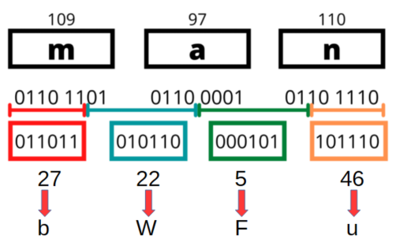
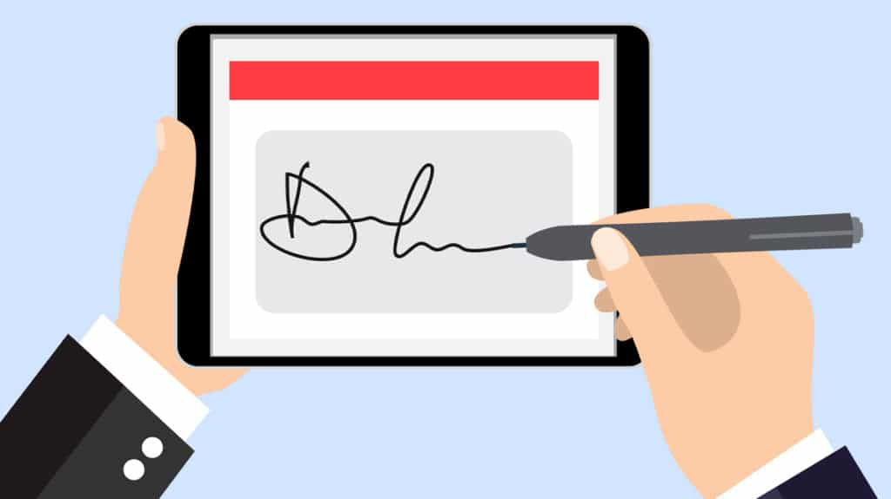
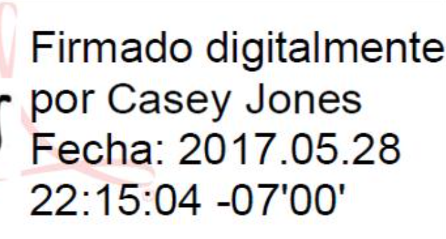
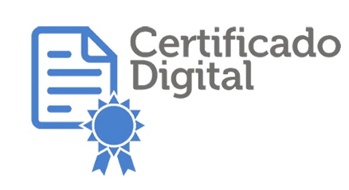

BASE64
Es muy habitual encontrar claves públicas, certificados y otros objetos criptograficos codificadas en Base64, por lo que es conveniente entender que es BASE64, como funciona, donde se puede encontrar, etc...
Conviene distinguir entre la clave y la codificación,
La clave pública es un conjunto de datos binarios. Como esos datos no son fácilmente legibles ni transportables como texto, suelen representarse en Base64.
-----BEGIN PUBLIC KEY----- MIIBIjANBgkqhkiG9w0BAQEFAAOCAQ8AMIIBCgKCAQEAr... ...más caracteres Base64... ...hasta el final... -----END PUBLIC KEY-----
Todo lo que está entre las líneas BEGIN PUBLIC KEY y END PUBLIC KEY es normalmente una representación Base64 de los datos binarios de la clave.
Base64 no es un código secreto ni un sistema de cifrado. Es un método de codificación de datos binarios en texto.
Convierte cualquier dato (una clave binaria, una imagen, un archivo PDF, audio, etc.) en una cadena de caracteres formada por:
Letras mayúsculas: A-Z, Letras minúsculas: a-z, Números: 0-9, Símbolos: + y /, A veces = al final como relleno (padding)
Por ejemplo, el texto: Hola codificado en Base64 se convierte en SG9sYQ==, y puede volver a decodificarse para recuperar el texto original.
Cuando se utiliza: Se utiliza cuando es necesario transmitir o almacenar datos binarios a través de sistemas diseñados para manejar texto.
Por ejemplo: Claves privadas o Claves públicas, que son numeros binarios de miles de bits.
Advertencia: Base64 no cifra ni protege la información. Cualquiera puede decodificarla fácilmente.
Al convertir datos binarios a texto, Base64 añade aproximadamente un 33 % más de tamaño.
Por ejemplo: Archivo original: 300 KB ⤷ Codificado en Base64: ~400 KB
Base64 es una forma estándar de representar datos binarios usando únicamente caracteres de texto para poder almacenarlos o transmitirlos fácilmente.
También es frecuente ver Base64 en: Certificados X.509, Claves públicas SSH, Firmas digitales y Certificados TLS/SSL.
Como se codifica en BASE64
Un ordenador almacena la información en bytes (8 bits). Base64 toma esos bytes y los transforma en grupos de 6 bits
Cada grupo puede tomar un valor entre 0 y 63. Cada valor se asocia a un caracter.
| 0 | 1 | 2 | 3 | 4 | 5 | 6 | 7 | 8 | 9 | 10 | 11 | 12 | 13 | 14 | 15 | 16 | 17 | 18 | 19 | 20 | 21 | 22 | 23 | 24 | 25 |
|---|---|---|---|---|---|---|---|---|---|---|---|---|---|---|---|---|---|---|---|---|---|---|---|---|---|
| A | B | C | D | E | F | G | H | I | J | K | L | M | N | O | P | Q | R | S | T | U | V | W | X | Y | Z |
| 26 | 27 | 28 | 29 | 30 | 31 | 32 | 33 | 34 | 35 | 36 | 37 | 38 | 39 | 40 | 41 | 42 | 43 | 44 | 45 | 46 | 47 | 48 | 49 | 50 | 51 |
| a | b | c | d | e | f | g | h | i | j | k | l | m | n | o | p | q | r | s | t | u | v | w | x | y | z |
| 52 | 53 | 54 | 55 | 56 | 57 | 58 | 59 | 60 | 61 | 62 | 63 | ||||||||||||||
| 0 | 1 | 2 | 3 | 4 | 5 | 6 | 7 | 8 | 9 | + | / |
Ejemplo completo : codificar "man"
-- En este caso el número de bytes es múltiplo de 3 --
Paso 1: Convertir cada carácter a ASCII y después a binario
m a n → 109 97 110 → 01101101 01100001 01101110
Agrupar bits(hay 24) 011011010110000101101110

Paso 2: Dividir en grupos de 6 bits
011011 010110 000101 101110
Paso 3: Convertir cada grupo a decimal
011011 010110 000101 101110 ⬇️ ⬇️ ⬇️ ⬇️ 27 22 5 46
Paso 4: Buscar en la tabla Base64
27=b 22=W 5=F 46=u → bWFu
Por tanto: man → bWFu
¿Qué pasa cuando no hay 3 bytes completos?
Aquí aparece el famoso "=" (el padding)
Ejemplo: "ma"
Tenemos dos caracteres: m = 01101101 a = 01100001
Juntos: 01101101 01100001 → Son 16 bits, pero BASE64 necesita trabajar con grupos de 24 bits, así que se añaden 8 ceros
01101101 01100001 00000000 Añadir un grupo de 8 ceros 011011010110000100000000 Agrupar 011011 010110 000100 000000 Dividir en grupos de 6 b W E A
➡️ Pero como el último grupo procede de bits añadidos artificialmente, se sustituye por padding =
bWE= ma → bWE=
Ejemplo: "m" → Un único byte: m = 01101101 → Se completan los bits faltantes 01101101 00000000 00000000
Se generan 4 caracteres Base64, pero dos provienen de relleno → Resultado: bQ==
Criptografia Híbrida
La criptografía híbrida es un modelo que combina criptografía asimétrica y criptografía simétrica para aprovechar lo mejor de cada una:
- la asimétrica es segura para intercambiar claves
- la simétrica es rápida para cifrar datos grandes
➡️ Se usa en prácticamente todo Internet moderno (HTTPS, TLS, VPNs, etc.).
criptografía híbrida = Se combinan ambas: Usas criptografía asimétrica solo para intercambiar una clave simétrica, y luego usas esa clave simétrica para todo lo demás
Cómo funciona paso a paso
Imaginemos una conexión entre cliente (A) y servidor (B)
Paso 1: El cliente indica al servidor que quiere conectar con el. El servidor envía su clave pública al cliente
Paso 2: El cliente genera una clave simétrica ( aleatoria y compleja )
Paso 3: El cliente cifra la clave simétrica. Usa la clave pública del servidor. La envia cifrada al servidor
Paso 4: El servidor la descifra la clave simétrica. Solo el servidor puede hacerlo porque tiene la clave privada:
Paso 5: Comunicación simétrica. A partir de aquí ambos comparten clave_sesión y todo el tráfico se cifra con un algoritmo simétrico (AES, ChaCha20, etc.)
Firma electrónica vs Firma digital
Aunque suenan similares, firma digital y firma electrónica no son exactamente lo mismo. La diferencia principal está en el nivel de seguridad y en la tecnología que usan
🖊️ Firma electrónica
Es un concepto amplio dentro del derecho digital. Es una categoria jurídica. Incluye cualquier método electrónico que sirva para aceptar o firmar un documento.

- Puede ser algo tan simple como
- Escribir tu nombre en un formulario online
- Marcar una casilla de “acepto”
- Dibujar tu firma con el mouse o en una pantalla táctil
Es válida legalmente en muchos países, pero tiene menor nivel de seguridad, porque no siempre garantiza quién firmó realmente.
-- la legislación europea establece que no se pueden negar efectos jurídicos a una firma únicamente por ser electrónica -- .
Sin embargo, si surge un conflicto (por ejemplo, alguien niega haber aceptado un contrato), una firma electrónica simple puede resultar más difícil de probar.
Cuantas menos evidencias existan sobre quién firmó y cómo lo hizo, más complicada será su defensa.
- Se distinguen tres niveles
- Firma electrónica simple → válida, pero con menor fuerza probatoria.
==> Haces clic en «Acepto el contrato». - Firma electrónica avanzada → permite identificar mejor al firmante y detectar modificaciones.
==> Recibes un SMS con un código único y firmas a través de una plataforma que registra tu identidad, fecha, hora e IP. - Firma electrónica cualificada → tiene el nivel más alto y, jurídicamente, es equivalente a la firma manuscrita en toda la UE.
==> Utilizas tu certificado digital cualificado o el DNIe para firmar electrónicamente el contrato.
🔐 Firma digital
La firma digital y la firma electrónica cualificada estan relacionadas, pero no son sinónimos. La diferencia principal es que se trata de conceptos de naturaleza diferente
- Firma electrónica cualificada: Es una categoria jurídica definida por el Regalmento eIDAS de la Unión Europea. Tiene que cumplir requisitos específicos en cuanto al certificado, al dispositivo de creación de la firma y al resto de condiciones legales.
- Firma digital: Es un concepto técnico basado en la criptografia de clave pública. Permite comprobar la autenticidad de la firma y detectar modificaciones en los datos firmados, siempre que se verifiquen correctamente las claves y los certificados corresponendientes.
Es un tipo específico de firma electrónica. Se basa en tecnologías de criptografía.
La firma digital real es invisible. No tiene forma visual, No es un trazo ni una imagen.
Son solo datos matemáticos (hash cifrado + certificado), por eso no hay “dibujos reales” que la representen fielmente.
Ejemplo parcial de codigo anexado al documento que se firma -----BEGIN PKCS7----- MIIG... (muchos caracteres) ...Qm9uZCBkaWdpdGFs... -----END PKCS7-----

Sin embargo, muchos programas permiten añadir una apariencia visual para indicar que el documento está firmado con firma digital.
Esta imagen no es la firma digital. Es solo una representación visual para indicar que existe.
- De hecho
- Un documento puede estar firmado digitalmente sin mostrar ningún sello o imagen visible.
- También puede mostrar una imagen de una firma manuscrita y no estar firmado digitalmente en absoluto.
- El uso de certificados digitales emitidos por entidades certificadoras garantiza:
- Identidad del firmante
- Integridad del documento (no ha sido alterado)
- No repudio (el firmante no puede negar que firmó)
Es la que se usa en trámites oficiales, contratos importantes y documentos legales de alto valor.
- En resumen
- Toda firma digital es electrónica,
- pero no toda firma electrónica es digital.
HASH y Firma Digital
La relación entre hash y firma digital es fundamental: la firma digital no se aplica directamente sobre el documento completo, sino sobre su huella criptográfica (hash).
✍️ ¿Qué es una Firma Digital?
Una firma digital es un mecanismo criptográfico que garantiza que un documento:
- No ha sido modificado (integridad).
- Proviene del remitente esperado (autenticidad).
- No puede ser repudiado (no repudio).
¿Como se usa?
Para crearla se usan:
- El hash del documento.
- Una clave privada del emisor del documento, que cifra ese hash.
- Este hash cifrado es la firma
El receptor puede verificar la firma usando la clave pública del emisor.
- El receptor
- Calcula el hash del documento recibido
- Descifra la firma con la clave pública
- Compara ambos hashes
Si coinciden → el documento es auténtico y no ha sido modificado.
En resumen:
- Hash: Detecta si un archivo ha sido alterado.
- Firma digital: Garantiza que el archivo es original y viene de quien dice enviarlo.
⚠️⚠️⚠️ Pero...., quien dice enviarlo, ¿ es realmente quien dice que es ?
Este problema se resuelve con los Certificados Digitales
Certificados Digitales

Un certificado digital es como una "credencial digital" que identifica de forma segura a una persona, empresa o servidor en Internet.
¿Qué contiene un certificado digital?
- 👤 Nombre del titular
- 🔑 Clave pública del titular
- 🧾 Información de la entidad que lo emite (Autoridad de Certificación)
- ✍️ Firma digital de la Autoridad de Certificación (CA)
- 📅 Fecha de emisión y caducidad
- Otros datos de interes...
Un certificado digital puede encontrarse almacenado en distintos formatos y soportes
- Archivos de certificado: .p12, .pfx, .cer, .crt, .pem.
- Tarjetas criptográficas o tarjetas inteligentes (smart cards).
- Tokens USB criptográficos (dispositivos similares a una memoria USB, pero diseñados para proteger las claves privadas).
- Módulos de seguridad hardware (HSM) utilizados en entornos empresariales.
- Almacenes de certificados del sistema operativo o del navegador.
🏢 ¿Qué es una Autoridad de Certificación (CA)?
Es una entidad confiable que se encarga de emitir y validar los certificados digitales. Ejemplos conocidos:
- 🏛️ FNMT – Fábrica Nacional de Moneda y Timbre
- ACCV – Autoritat de Certificació de la Comunitat Valenciana
- Entrust Root Certification Authority (dni-e)
- Izenpe - Autoridad vasca de certificación.
- CATCert (fusionada en AOC)
- Camerfirma (Cámaras de comercio)
- ANCERT - Autoridad de Certificación del Consejo General del Notariado
- Let's Encrypt
- DigiCert
- GlobalSign
- Y mas....
⚠️ Normalmente, todas estas CA se suministran ya instaladas en los Sistemas Operativos, pero se pueden añadir mas...
¿Para qué se usan los certificados digitales?
- Cifrado de comunicaciones: Protegen la información entre tu navegador y un sitio web (HTTPS).
- Autenticación: Verifican que estás hablando con el servidor legítimo, no con un impostor.
- Firmas digitales: Aseguran que un documento electrónico no ha sido alterado.
- Gestión de identidad: En empresas o gobiernos, se usan para acceder a servicios seguros.
¿Cómo funciona?
- 1️⃣ El servidor envía su certificado digital al navegador.
- 2️⃣ El navegador comprueba si la CA es de confianza.
- 3️⃣ Si todo es válido, se establece una conexión cifrada.
En resumen:
Un certificado digital permite cifrar, autenticar y verificar en el mundo digital de forma segura.
Y para que un certificado digital funcione necesitamos una PKI (Infraestructura de Clave Pública)🏛️ ¿Qué es una PKI (Public Key Infrastructure) ?
La Infraestructura de Clave Pública o PKI es un sistema que permite crear, gestionar, distribuir y revocar certificados digitales y claves públicas.
En pocas palabras, es el conjunto de tecnologías, políticas y procedimientos que hacen posible la seguridad en Internet.
Componentes principales de una PKI:
- Autoridad de Certificación (CA): Emite y firma certificados digitales.
- Autoridad de Registro (RA): Verifica la identidad antes de emitir certificados (actúa como filtro para la CA).
- Repositorio de certificados: Lugar donde se almacenan y consultan los certificados emitidos.
- Listas de revocación (CRL): Informan si un certificado ya no es válido.
- Pareja de claves: Cada usuario tiene una clave pública y una clave privada.
¿Cómo funciona una PKI?
- 1️⃣ Un usuario solicita un certificado a la CA (por medio de la RA).
- 2️⃣ La RA verifica la identidad del solicitante.
- 3️⃣ Si todo es correcto, la CA genera y firma un certificado digital con la clave pública del usuario.
- 4️⃣ El usuario puede usar su certificado para cifrar, firmar o autenticar.
- 5️⃣ Otros usuarios pueden verificar el certificado consultando la CA.
¿Para qué sirve una PKI?
- Autenticación de usuarios, servidores o dispositivos.
- Cifrado de datos y comunicaciones (por ejemplo HTTPS).
- Firmas digitales de documentos o correos electrónicos.
- Intercambio seguro de claves.
En resumen:
Una PKI hace posible que confiemos en la identidad digital de personas y sitios web, utilizando certificados digitales respaldados por entidades confiables.